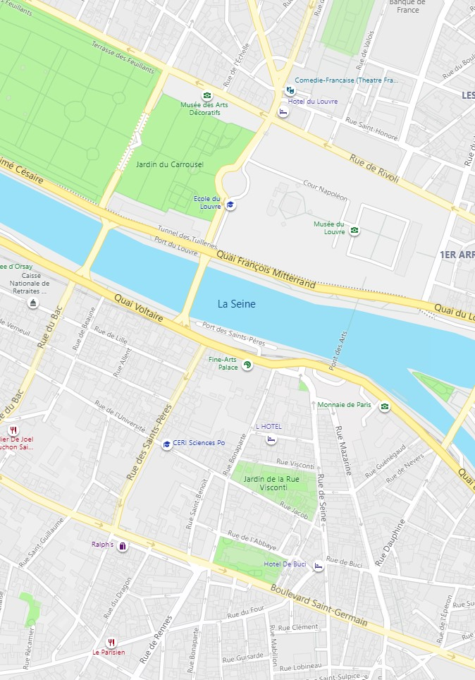

Reading
Skill Focus
Understanding chronological order
When ideas or events are presented in the order they occur, and when sequences are given through specific time expressions, the text is usually organized in chronological order. Identifying the chronological relationship in the text can help readers follow ideas easily and improve their understanding of the text. The following are clues to recognizing the chronological pattern of the text:
Text A
Living Abroad in Paris as a Student
Vicki Fletcher
1 Arriving in Paris, most foreigners dream of living the Parisian life and blending into the local crowd: sipping bad coffee, smoking strong cigarettes, complaining about anything and everything in perfect slang French. Paris is the city of dreams; the city of lights; the city of love—a city of clichés for a reason. But it's not all quaint passageways and luring Frenchmen. If you are thinking of heading to Paris for a study period, then perhaps a little reality check is in order. But what the hell, my experience was—despite a few low points involving grades, red wine, and dirty kitchens—a romantic one.
2 I paved my path to Paris through an exchange program with the Australian National University. In Canberra I study linguistics, majoring in French and Spanish, which lead to my language exchange for one semester at Sciences-po University on Paris' left bank. The application process was a lengthy one. First I was required to complete an application for the Australian National University, and then another for Sciences-po. Once accepted, and having survived the intense online course registration at 3 a.m. my local time, I was on my way across the globe.
Map of Sciences Po Campus in Paris.
3 On arrival in Paris I was constantly reminded of the ever-present bureaucratic processes I was required to complete. Forms to be filled in, meetings to attend, bank accounts to open, the list seemed endless. Perhaps it was due to my slightly obsessive organizational habits, perhaps it was because I was expecting the worst, but somehow this endless list of to-do's was completed in little more than a week. There was one glitch in this smooth sailing though. The medical check-up I was required to attend in order to obtain my Carte de sejour (residency permit). This didn't take place until a good two months into my stay. I was still one of the lucky ones it would seem, some other students were not called for the appointment until a mere month before they returned home!
4 Then the real work began.
5 Once classes were underway, I found myself volunteering to do oral presentations and assignments first, rather than last. This tactic turned out to be very helpful because:
6 Once I had finished class for the week, I had an ever-increasing list of museums to visit, neighborhoods to explore, cafés to sit in, parks to run around, and bars to frequent. Read as many books about Paris as you can. Talk to as many locals and other foreigners living there as you can. You will soon realize that everyone has different experiences and different favorite places in the city, which in turn provides you with a plethora of new places to discover.
7 The one thing that reading a book or talking to someone cannot do is to provide you with the experience of wandering Paris by foot. I cannot explain the serene moments I had walking to school each day along the river, or aimlessly winding through narrow streets lined with bookshops and galleries. I discovered some of my favorite places in Paris by wandering. The people watching, the sounds of the city, the colors as the seasons change, they all add to the ecstasy that is experiencing Paris as a local—a once-in-a-lifetime opportunity for most students.
8 After spending five months frolicking through the enchanting neighborhoods, I fell in love with the atmosphere that oozed from every open door, and with every spoken word. There is something comforting about walking to the market each Sunday to be faced with the most vibrant array of fruits, vegetables and dairy products imaginable. There is warmth in saying bonjour to the man across the hall. There is calm in returning home from a day out in the city and looking out the window at the timeless cityscape. There really is something special about living in Paris, and getting to know places you know you would never have discovered as a tourist. Yet there is also excitement in knowing that you will never truly know Paris, there will be something new to see, something you never knew existed before.
9 On my last day in Paris, I confidently said, "Bonjour Monsieur," as I passed the little store down the street, constantly overflowing with dusty vegetables and overripe fruit. "Bonjour mademoiselle! C'est notre petite touriste," he bellowed back from behind a crate of cereal boxes. I guess no matter how hard I tried I was always going to be an outsider, a tourist. Only now, I could understand what was being said to me.
10 The best part about going on exchange in Paris is falling in love with the city in your own unique way. Everyone's experience of Paris is different. I know mine is unique and special to me, my own little pieces of Paris.